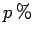
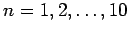

Bei der geometrisch-degressiven Abschreibung werden in jedem Jahr  vom jeweiligen Restwert des Vorjahres abgeschrieben. Für den Restwert Rn nach n Jahren gilt:
In der Regel ist A gegeben. Beträgt die Laufzeit N Jahre, dann können gemäß (1.98) von den Größen RN, p und N zwei weitere vorgegeben und die dritte dazu bestimmt werden.
| Beispiel A |
|
Eine Maschine mit dem Anschaffungswert |
| Beispiel B |
|
An einem Anschaffungswert von soll der Verlauf der Restwerte Rn für  Jahre bei a) linearer, b) arithmetisch-degressiver, c) geometrisch-degressiver Abschreibung demonstriert werden. Das Ergebnis zeigt die folgende Abbildung. |